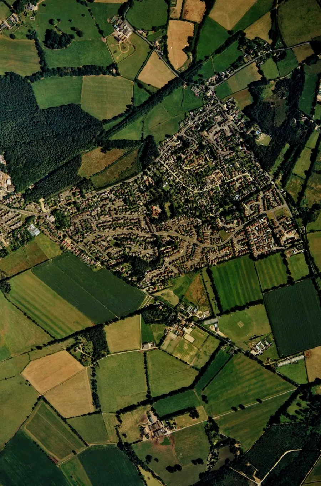
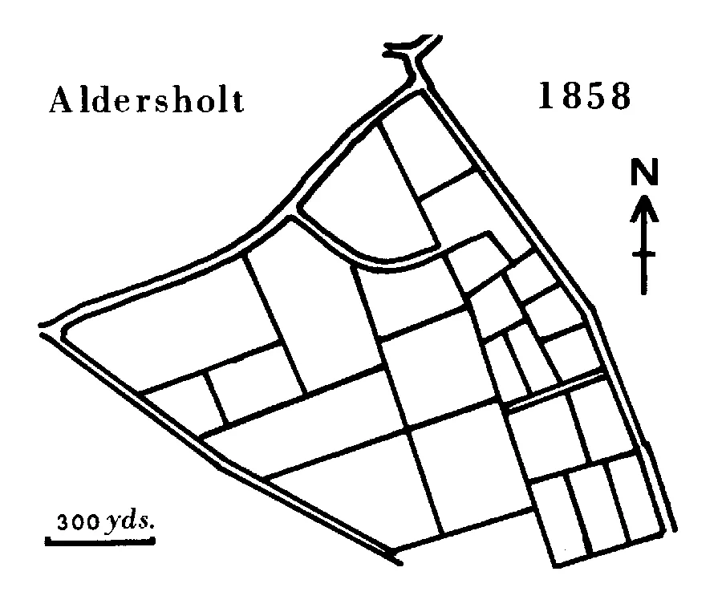
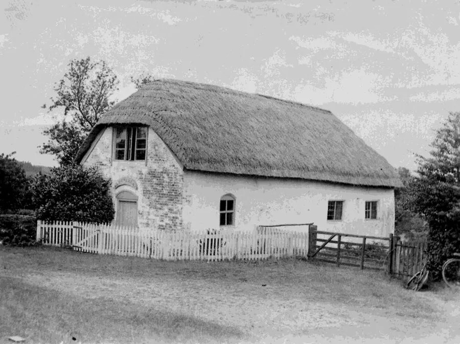
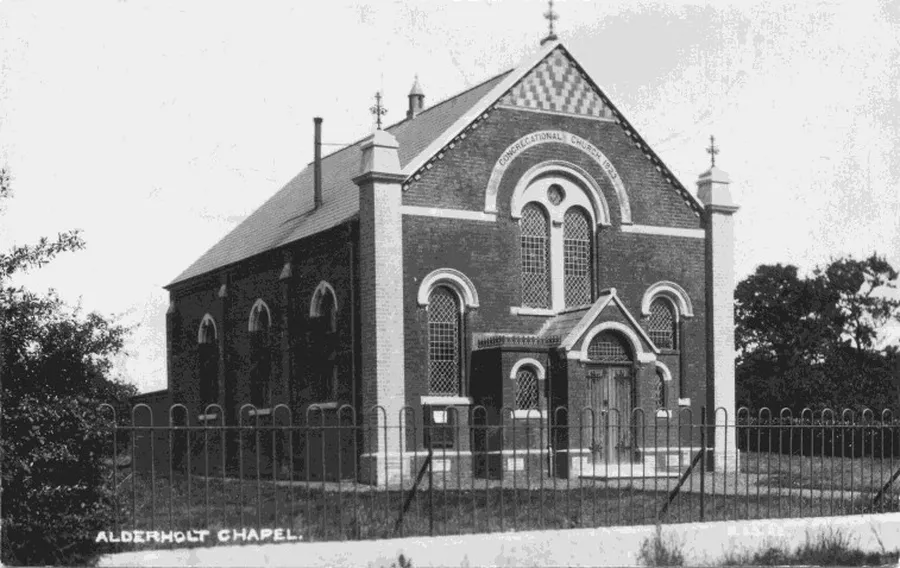
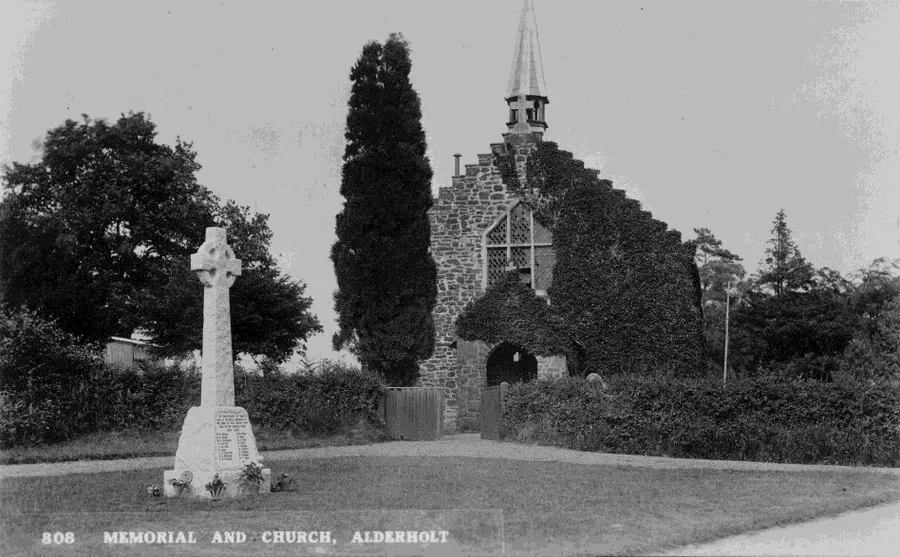
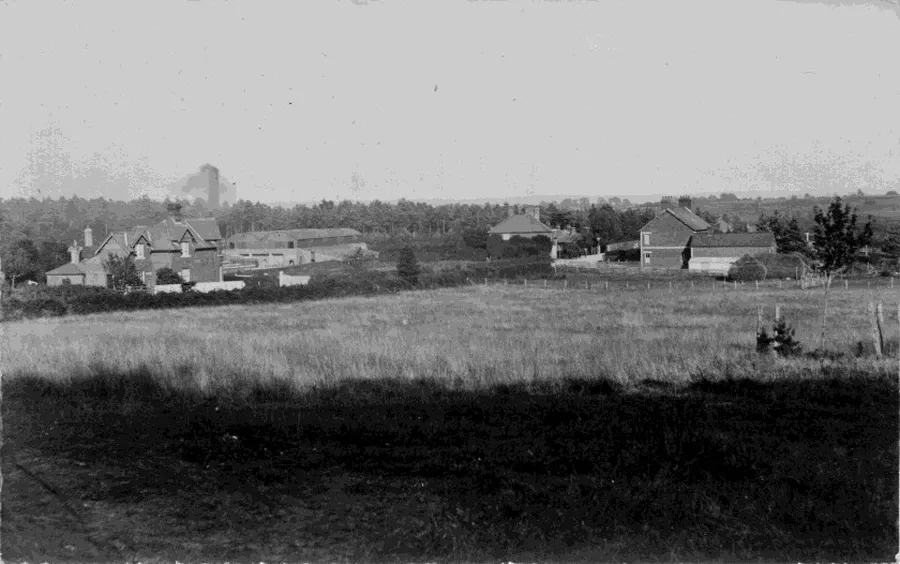
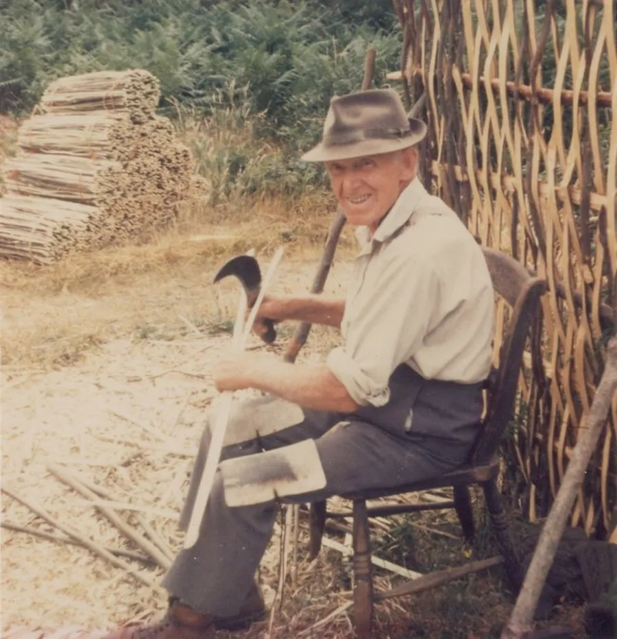
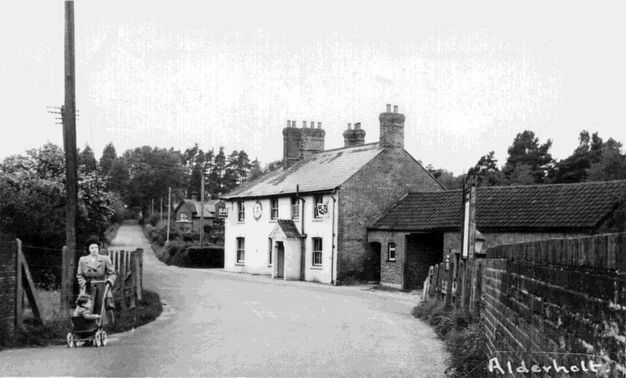
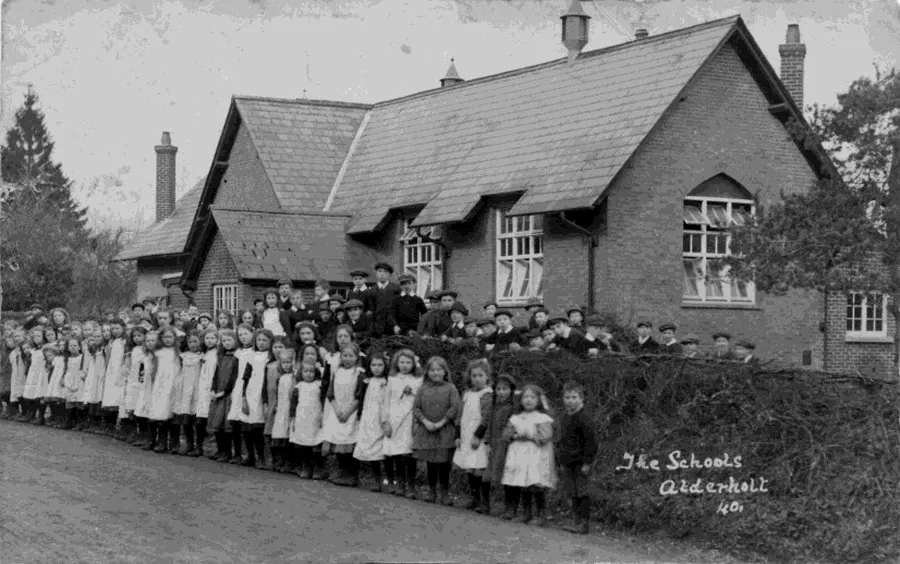
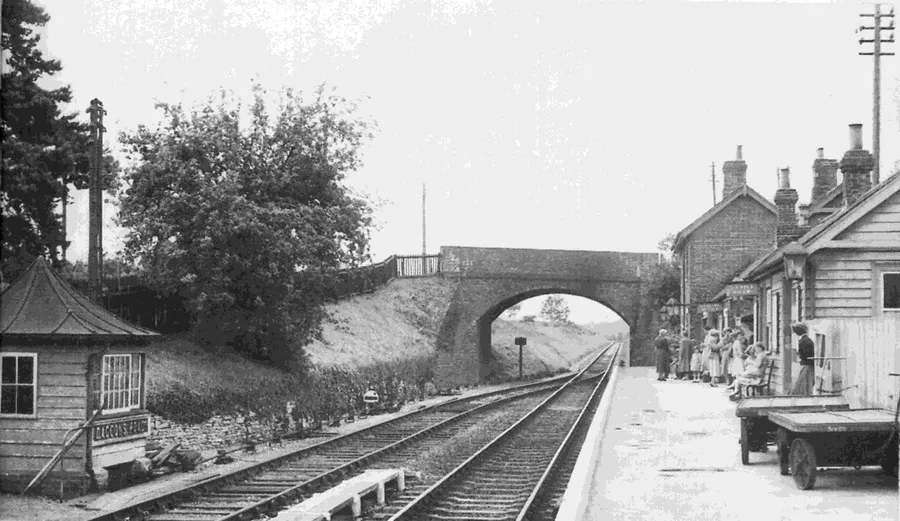

Alderholt Archives — An Overview
by Christopher King

Alderholt is a village and parish in East Dorset. It was once part of the larger Cranborne Parish but it became an ecclesiastical parish on 6th November 1849 and has now an area of 3,769 acres.
It does not boast many places of interest because for many years it was a sparsely inhabited area of heathland. Only in recent years has the village grown to what it is today. Between 1851 and 1975 the population rose by 160 to 800. But today it is over 3,000.

By tradition the Battle of Catgurnion was fought between King Arthur and the Saxons before he marched to retake Witesbury now Whitsbury.
The village was not always where it is today. The main settlement was along Alderholt Street now called Sandleheath Road. Like any typical village we find the church — St. Clements — farms, the mill, a blacksmith, a Manor, a village green with a pond and the public house called The New Inn.
In 1858 part of Alderholt Heath to the south was enclosed by act of parliament. This action provoked much opposition among the cottagers orcommoners as they took it to be an invasion of their common rights.

With the building of a new road along the northern edge (Station Road — Park Bottom) the freeholders among whom Mr. Churchill and Lord Salisbury were the largest landowners began to build many cottages. As more land was enclosed from the waste more cottages were built. Alderholt Street ceased to be the main area of population and the settlement along the Fordingbridge – Cranborne road became the new centre of the village.
Since 1975 nearly half the enclosed land has been built on.
Churches
St. Clements
Built in medieval times and situated on Alderholt Street. Dedicated to St. Clement Bishop and Martyr it was a 'chapel of ease' for the Cranborne Church. It is referred to in a document of 1574. The church was destroyed by Cromwell's army in the civil war and fell into ruin.
Ebenezer

The Congregationalists built a chapel of mud and thatch at Cripplestyle in 1807. This collapsed in 1976. The site is marked by a memorial stone and garden.
Alderholt Chapel

A mud and slate building was built in 1820. A brick replacement was built in 1861. This was pulled down in the late fifties. The existing building was opened in 1923 and redeveloped in 2011.
St. James

Built from locally quarried sandstone and consecrated in 1849. It is situated in the geographical centre of the parish and dedicated to St. James the greater, Apostle and Martyr. Extended in 1922.
Crendell Methodist
The present building is dated 1870. It was closed in 2011.
Williams Memorial
Built in 1888 to replace Ebenezer. Named in memory of Samuel Williams who for forty years wasma pastor. The congregation joined with Alderholt in 2000. The building is now an art studio.
Tabernacle Full Gospel Church
In Camel Green it opened in June 1938 and was closed in 2020.
Industries

Pottery
The parish straddles a narrow band of clay situated between the chalk uplands of Cranborne Chase and the sandy heathland to the south and east. From records it is known that a community of potters had become established on the edge of this heathland at Alderholt by the early 14th century. The last kilns operated in the area towards the end of the 19th century. A kiln mound can still be seen at the Salisbury Arms farm on Presseys corner.
Bricks
The same clay was used to make bricks for local use. Billets and Rakes were situated in Camel Green, Pagets in the station yard where the surplus stores used to be. There were other Brickworks near Alderholt Mill and on Hillbury Road. A lot of the bricks were used in Bournemouth. Production stopped just before the last war.

Hurdles and Thatching Spars
Made from hazel cut from coppices. Several people were involved in this trade. Peter Bond was the last hurdler in the area. The product is now no longer financially viable due to modern production techniques.
Public Houses

The Churchill Arms
Originally called the Railway Arms. Situated near the Daggons Road station.
The Gold Oak Bar
Halfway between Alderholt and Cranborne. Now a private house. Until a few years ago the writing of the bar was still visible on the farmhouse wall.
The New Inn
Alderholt Street. Converted to two cottages before 1850.
The Red Lion
Fordingbridge Road. Now Red Lion Cottage.
The Salisbury Arms
The ruins of this public house on Pressey's corner stand in the grounds of Salisbury Arms Farm.
There were also several micro-breweries in the area. The Churchill Arms is the only public house that has remained open.
St. James School

There were Little Dame schools at Alderholt Street, Crendell and Cripplestyle. The National School St. James was built in 1847.
This school was enlarged several times until 1982 when a new building was built on Park Lane.
Amenities
Village Hall
Built in the early 1920’s. A new hall built by a local builder was opened in 1968.
Reading Room
Built in 1904 through the generosity of Lord and Lady Salisbury. It was intended for silent reading as there was no village hall at the time.
Railways

The Salisbury and Dorset Junction Railway was opened in 1866. Lord Beeching closed the line in 1963. The bridge has been demolished and Daggons Road station is now private housing.
Christopher King 2003 (Edited 2019)